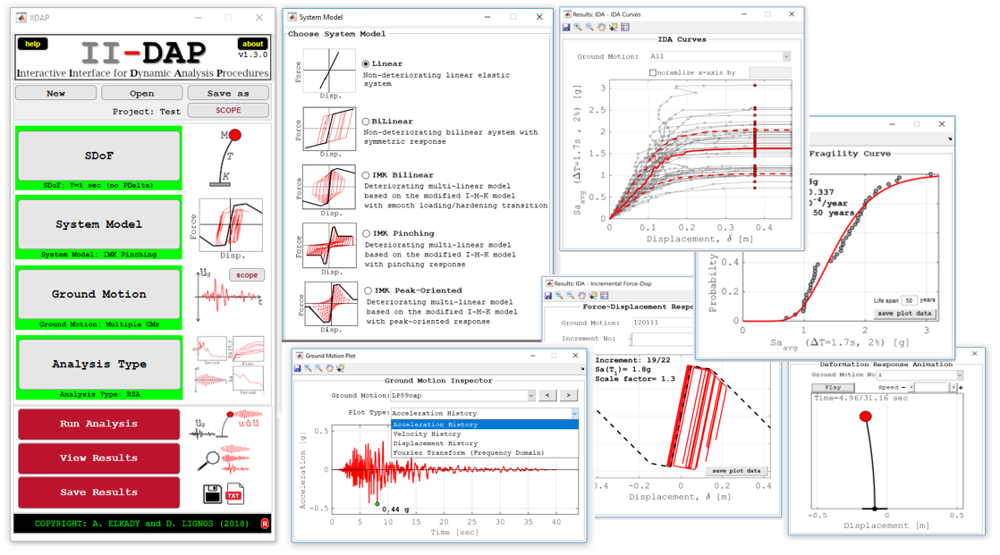
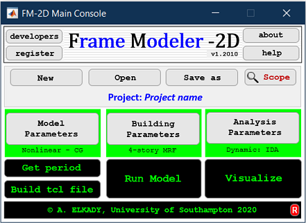
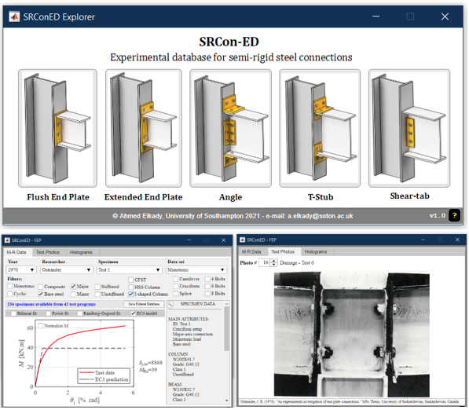
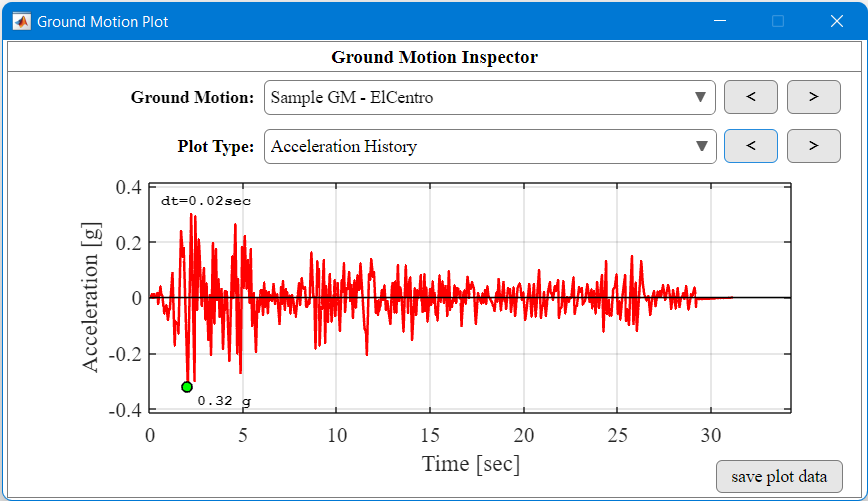

II-DAP
II-DAP is a standalone MATLAB-based software capable of performing a variety of dynamic analysis procedures ranging from simple response history analysis to response spectrum and incremental dynamic analyses on single degree-of-freedom systems (SDoF). IIDAP includes a wide-ranging library of SDoF system models ranging from simple non-deteriorating linear and bilinear models to state-of-the-art deteriorating bilinear pinched and peak-oriented responses. A seismic hazard module is also included for the quantification of collapse risk. IIDAP is highly beneficial for both educational and research purposes.
Tutorial videos can be found at this YouTube playlist
Download here
FM-2D
Frame Modeler 2D is an open-source MATLAB-based computational platform for modeling and analyzing building assets in OpenSEES using state-of-the-art modeling and dynamic analyses guidelines. The current version supports steel MRFs, CBFs and EBFs.
Tutorial videos can be found at this YouTube playlist
Download here

EaRL
EaRL is an open source MATLAB-based platform/software for earthquake risk, loss and lifecycle analysis. EaRL provides an interactive and user-friendly platform for evaluating the economic consequences of natural hazards in general, and seismic hazard in particular, on building assets, in support of the performance-based earthquake engineering framework (e.g., FEMA P-58). The platform is supported by a comprehensive library for visualizing and reporting the disaggregated economic losses (repair cost, repair time, injuries, casualties, etc). Being an open-source platform, developed in the popular MATLAB environment, EaRL paves the way for researchers and practicing engineers worldwide to collaborate and contribute to its metadata, functionalities and interactive features. This is further supported by the platform’s well-documented technical details and codebase.
Tutorial videos can be found at this YouTube playlist
Download here

SRConED
SRConED is an interactive interface for exploring and processing a recently-collated comprehensive experimental database for bare steel and composite semi-rigid (SR) connections. The current version of the database (v2.2302) include data for flush end-plate connections (FEP) covering more than 420 tests from 71 experimental programs. Data for other SR connections will be rolled out in future versions.
Download here
GM-Inspector
GM-Inspector is a visual tool for importing ground motion acceleration record files of different formats simply and intuitively. The properties of the ground motion can then be inspected through an interactive interface. This includes plots of the acceleration, velocity and displacement histories as well as the Fourier transformation and acceleration response spectrum. Additionally, other parameters are quantified such as the effective duration and filtered-incremental-velocity (FIV3).
Download here
